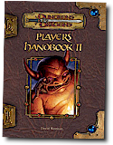
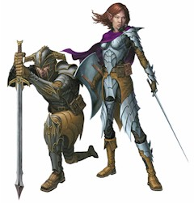

The Player's Handbook II builds upon existing materials in the Player's Handbook by expanding the options available for players by both providing new material and increasing the uses for existing rules. Included are chapters on character race, background, classes, feats, spells, character creation, and character advancement. New rules include racial affiliations that make race matter as a character advances in level, new character classes and alternate class features for existing classes, new feats, tools for rapid character creation, and additional organization and teamwork benefits -- an option first introduced in Dungeon Master's Guide II and Heroes of Battle. The excerpts below include the table of contents and introduction, the knight class, expanded barbarian material, a feat table, the polymorph subschool and sample spells, and some material about rebuilding your character.
Knight Class (Chapter 1: New Classes) KNIGHT "I offer you surrender or an honorable death in battle. The choice is yours." -- Archibold the Impetuous A knight is a proud, skilled melee combatant who fights in the name of honor and chivalry. A knight relies on more than a sharp sword and a stout suit of armor to defeat her foes. Her drive, determination, and fighting spirit allow her to control the battlefield in ways that others cannot match. A knight can challenge an opponent to a duel, calling upon the foe's pride and ego to force his hand. The knight's talent with heavy armor, shields, and defensive tactics grant her the ability to disrupt her foe's plans. Only the most talented rogues and monks can slip past a knight's defenses to strike at her allies. An adventuring group with wizards, sorcerers, and other lightly armored members thrives with the assistance of a knight. While the knight keeps enemies occupied, her allies can use their talents and abilities without fear of attack or harassment. The knight class is a great choice if you want to play a tough, durable melee combatant whose strong personality allows you to manipulate your foes. Weaker foes cower in fear before you, while stronger foes move to strike you rather than your allies when you play on their egos and challenge them to duels. Your expertise in using armor and carrying a shield allows you to form an impregnable defensive line. Once you engage a foe, he has difficulty moving away to threaten your allies. If you want to be a front-line melee combatant who defends the rest of the party and manipulates opponents, the knight is a good choice. MAKING A KNIGHT A low-level knight is similar to a cross between a fighter and a bard. You have many hit points, a high Armor Class, and an ability similar to bardic music (the knight's challenge class feature). You can pick a single foe, usually the one who poses the most dangerous physical threat, and gain a bonus on attack rolls and damage rolls against that opponent. You must pay close attention to the knight's code of conduct, since it forbids you from taking advantage of several tactically useful situations. You excel in combat in a manner similar to a fighter -- but while a fighter can slay a monster, your primary talent is your ability to keep that monster away from your allies while you battle it. It might take you longer to win the day, but your many hit points and strong defensive abilities help preserve you. Best of all, your defense enables your allies to function at full capacity without being subject to the monster's attacks. Any sorcerer or wizard in the party thrives when you are there to absorb attacks and hold back your mutual foes. As you advance in level, you gain the ability to dictate a foe's actions, forcing him to attack you instead of other targets. Weaker opponents, which typically appear in numbers too large for you to hold them all back, quail in terror when you menace them. Even if they slip past you, they take penalties when they attack your allies. Your knight's challenge and shield block class features combine to let you excel in one-on-one melee, granting you a bonus on attack rolls, damage rolls, and Armor Class against a single foe of your choice. If the group faces a mighty villain or a single, overwhelming physical threat, it's up to you to keep the monster occupied while your allies cast their spells or maneuver for position. Abilities: You benefit from a high Charisma score, since it determines how often you can use some of your abilities and the save DC of those abilities. A high Constitution allows you to increase your already impressive hit point total, thus bolstering your capacity to defend your allies. Strength improves your combat abilities, making you more effective as a front-line character. Races: The majority of knights are dwarves, humans, and half-elves. The dwarf's tendency toward order, combined with that race's militaristic bent, gives rise to fighting orders dedicated to upholding justice and obeying an honorable code. Dwarf knights also serve as wandering dispensers of justice between isolated settlements who enforce the rule of law and protect small clanholds. Humanity, with its sprawling kingdoms and empires, produces many knights who fight as much for king and country as for personal honor and monetary rewards. Some half-elves enter into such service as well and can rise to high ranks within such orders. Gnomes and halflings rarely become knights, since the knight's straightforward code of conduct runs counter to the small races' reliance on trickery and clever planning. Few half-orcs have the opportunity to become knights, but when they do their natural strength serves them well. Elf knights are rare, since elves prefer freedom and flexibility over the rigid code of honor all knights must follow. Alignment: Knights are always lawful. Their dedication to a code of conduct is but one expression of their devotion to order. Most knightly orders arise as institutions forged to protect a kingdom from invaders or to enforce the law against chaos from within. While knights value order, they tend in equal numbers toward good, evil, and neutrality. Lawful good knights see order as a tool to protect the innocent and weak from evil. Lawful evil knights believe that the social order serves to reward the strong. Lawful neutral knights abhor the destruction and suffering that chaos can bring and so uphold order for its own sake. Starting Gold: 6d4x10 gp (150 gp). Starting Age: As paladin (PH 109). CLASS FEATURES Your class features involve mastering the use of armor and shields and learning how to manipulate your foes so that melee combat takes place on your terms, not theirs. Weapon and Armor Proficiency: Knights are proficient with all simple and martial weapons and with all armor (heavy, medium, and light) and all shields (except tower shields). Knight's Challenge: Your dauntless fighting spirit plays a major role in your fighting style, as important as the strength of your arm or the sharpness of your blade. In battle, you use the force of your personality to challenge your enemies. You can call out a foe, shouting a challenge that boosts his confidence, or issue a general challenge that strikes fear into weak opponents and compels strong opponents to seek you out for personal combat. By playing on your enemies' ego, you can manipulate your foes. You can use this ability a number of times per day equal to 1/2 your class level + your Charisma bonus (minimum once per day). As you gain levels, you gain a number of options that you can use in conjunction with this ability. Even if you and your foes lack a shared language, you can still effectively communicate through body language, tone, and certain oaths and challenges you learn from a variety of different tongues. Fighting Challenge (Ex): As a swift action, you can issue a challenge against a single opponent. The target of this ability must have an Intelligence of 5 or higher, have a language of some sort, and have a CR greater than or equal to your character level minus 2. If it does not meet these requirements, a use of this ability is expended without effect. If the target does meet the conditions given above, you gain a +1 morale bonus on Will saves and a +1 morale bonus on attack rolls and damage rolls against the target of this ability. You fight with renewed vigor and energy by placing your honor and reputation on the line. If your chosen foe reduces you to 0 or fewer hit points, you lose two uses of your knight's challenge ability for the day because of the blow to your ego and confidence from this defeat. The effect of a fighting challenge lasts for a number of rounds equal to 5 + your Charisma bonus (if any). If you are capable of issuing a knight's challenge more than once per day, you can use this ability more than once in a single encounter. If your first chosen foe is defeated or flees the area, you can issue a new challenge to a different foe. You cannot switch foes if your original target is still active. At 7th level, the bonus you gain from this ability increases to +2. At 13th level, it rises to +3. At 19th level, it increases to +4. Test of Mettle (Ex): Starting at 4th level, you can shout a challenge to all enemies, calling out for the mightiest among them to face you in combat. Any target of this ability must have a language of some sort and an Intelligence score of 5 or higher. Creatures that do not meet these requirements are immune to the test of mettle. You must have line of sight and line of effect to the targets of this ability. As a swift action, you can expend one use of your knight's challenge ability to cause all your enemies within 100 feet with a CR greater than or equal to your character level minus 2 to make Will saves (DC 10 + 1/2 your class level + your Cha modifier). Creatures that fail this save are forced to attack you with their ranged or melee attacks in preference over other available targets. If a foe attacks by casting a spell or using a supernatural ability, he must target you with the attack or include you in the effect's area. An opponent compelled to act in this manner is not thrown into a mindless rage and does not have to move to attack you in melee if doing so would provoke attacks of opportunity against him. In such a case, he can use ranged attacks against you or attack any opponents he threatens as normal. If anyone other than you attacks the target, the effect of the test of mettle ends for that specific target. If you are reduced to 0 or fewer hit points by an opponent forced to attack you due to this ability, you gain one additional use of your knight's challenge ability for that day. This additional use comes from increased confidence and the knowledge that you have proved your mettle as a knight against your enemies by calling out foes even against overwhelming odds. This additional use disappears if you have not used it by the start of the next day. You can only gain one additional use of your knight's challenge ability in this manner per day. The effect of a test of mettle lasts for a number of rounds equal to 5 + your Charisma bonus (if any). Whether a creature fails or succeeds on its save against your test of mettle, it can only be targeted by this effect once per day. Call to Battle (Ex): Starting at 8th level, you become an inspiring figure on the battlefield. When all seems lost, you are a beacon of hope who continues to fight on despite the odds. No cause is yet lost when a knight still battles on its name. As a swift action, you can expend one use of your knight's challenge ability to grant an ally another save against a fear effect. The target gains a bonus on this save equal to your Charisma bonus (if any). If the target succeeds on this save, he gains the benefit for a successful save against the attack or spell. This ability reflects your talent to inspire your allies in the face of a daunting foe. For example, Lidda fails her save against a lich's fear spell. On his next action, Sir Agrivail uses his call to battle ability to grant Lidda another save. If she succeeds, she immediately shrugs off the effect of the fear spell. Daunting Challenge (Ex): Starting at 12th level, you can call out opponents, striking fear into the hearts of your enemies. In this manner you separate the strong-minded from the weak-willed, allowing you to focus on opponents that are worthy foes. As a swift action, you can expend one use of your knight's challenge ability to issue a daunting challenge. This ability affects all creatures within 100 feet of you that have a CR less than your character level minus 2. Targets must be able to hear you, speak or understand a language of some sort, and have an Intelligence score of 5 or more. All targets who meet these conditions must make Will saves (DC 10 + 1/2 your class level + your Cha modifier) or become shaken. Whether a creature fails or succeeds on its save against your daunting challenge, it can only be targeted by this effect once per day. Bond of Loyalty (Ex): Starting at 16th level, your loyalty to your comrades endures even in the face of powerful magic. You can expend one use of your knight's challenge ability to make an additional saving throw against a mindaffecting spell or ability. You can use this ability once per round as a free action and can continue to use it even if an opponent is controlling your actions with a mind-affecting spell or ability. Loyal Beyond Death (Ex): At 20th level, if you are reduced to 0 or fewer hit points by an effect that otherwise leaves your body intact, you can expend one use of your knight's challenge ability to remain conscious and continue to act for 1 more round before dying. You can use this ability even if your hit point total is -10 or lower. If your body is somehow destroyed before your next action (such as by disintegrate), then you cannot act. You can continue to expend uses of your knight's challenge ability to survive from round to round until you run out of uses. If you receive healing that leaves you with more than -10 hit points, you survive (or fall unconscious, as appropriate to your new hit point total) when you stop using this ability. Otherwise, death overtakes you when you run out of uses of your knight's challenge ability. The Knight's Code: You fight not only to defeat your foes but to prove your honor, demonstrate your fighting ability, and win renown across the land. The stories that arise from your deeds are just as important to you as the deeds themselves. A good knight hopes that her example encourages others to lead righteous lives. A neutral knight wishes to uphold the cause of his liege (if he has one) and win glory. An evil knight seeks to win acclaim across the land and increase her own personal power. The knight's code focuses on fair play: A victory achieved through pure skill is more difficult, and hence wins more glory, than one achieved through trickery or guile.
If you violate any part of this code, you lose one use of your knight's challenge ability for the day. If your knight's challenge ability is not available when you violate the code (for example, if you have exhausted your uses for the day), you take a -2 penalty on attack rolls and saves for the rest of that day. Your betrayal of your code of conduct undermines the foundation of confidence and honor that drives you forward. While you cleave to your view of honor, chivalry, and pursuit of glory, you do not force your views on others. You might chide a rogue for sneaking around a battlefield, but you recognize (and perhaps even feel a bit smug about) the reality that not everyone is fit to follow the knight's path. Mounted Combat: At 2nd level, you gain Mounted Combat as a bonus feat. Shield Block (Ex): Starting at 2nd level, you excel in using your armor and shield to frustrate your enemy's attacks. During your action, designate a single opponent as the target of this ability. Your shield bonus to AC against that foe increases by 1, as you move your shield to defl ect an incoming blow, possibly providing just enough protection to turn a telling swing into a near miss. This shield bonus increases to +2 at 11th level and +3 at 20th level. Bulwark of Defense (Ex): When you reach 3rd level, an opponent that begins its turn in your threatened area treats all the squares that you threaten as difficult terrain. Your strict vigilance and active defensive maneuvers force your opponents to move with care. Armor Mastery (Ex): Starting at 4th level, you are able to wear your armor like a second skin and ignore the standard speed reduction for wearing medium armor. Starting at 9th level, you ignore the speed reduction imposed by heavy armor as well. Bonus Feat: At 5th level, you gain a bonus feat chosen from the following list: Animal Affinity, Diehard, Endurance, Great Fortitude, Iron Will, Quick Draw, Ride-By Attack, Spirited Charge, Trample, or Weapon Focus (lance). You must still meet any prerequisites for the feat. You gain an additional bonus feat from this list at 10th level and again at 15th level. Vigilant Defender (Ex): Starting at 5th level, you stand your ground against all enemies, warding the spot where you make your stand to prevent foes from slipping past and attacking those you protect. If an opponent attempts to use the Tumble skill to move through your threatened area or your space without provoking attacks of opportunity, the Tumble check DC to avoid your attacks of opportunity increases by an amount equal to your class level. Shield Ally (Ex): Starting at 6th level, as an immediate action you can opt to absorb part of the damage dealt to an adjacent ally. Each time this ally takes damage from a physical attack before your next turn, you can take half this damage on yourself. The target takes the other half as normal. You can only absorb damage from physical melee attacks and ranged attacks, such as an incoming arrow or a blow from a sword, not from spells and other effects. Improved Shield Ally (Ex): At 14th level, your ability to absorb damage increases. Once per round you can absorb all the damage from a single attack directed against an adjacent ally. In addition, you continue to absorb half the damage from other physical attacks on an adjacent ally, if you so choose. You must decide whether to use this ability after the attacker determines that an attack has succeeded but before he rolls damage. Impetuous Endurance (Ex): Starting at 17th level, your fighting spirit enables you to push your body beyond the normal limits of endurance. You no longer automatically fail a saving throw on a roll of 1. You might still fail the save if your result fails to equal or beat the DC. PLAYING A KNIGHT As a knight, you are driven to prove your abilities, showcase the code of chivalry as a proper way to live, and defend your allies. You are impetuous and brave, never backing down from a challenge. When you face a mighty foe, you take a moment to call out a challenge to him, salute his fighting ability, or list his crimes that you seek to avenge. Religion Knights value order and honor in all things. They worship lawful gods, though whether their patrons are good, neutral, or evil depends solely on the knight's preferences. Good knights favor Heironeous, while neutral ones follow St. Cuthbert. Evil knights, if they venerate a god, offer prayers to Hextor. Knights of Heironeous and Hextor are renowned for the epic duels they have fought against each other. Opposing armies sometimes halt their advance to allow these sworn enemies to duel to the death before the rest of the battle is joined. Other Classes You respect paladins for their skill in combat and devotion to a code of conduct, although their path is somewhat different from your own. You see wizards, sorcerers, clerics, and bards as useful allies who should stay back away from combat; individual knights sometimes travel partnered with a member of one of these classes. Most knights consider barbarians to be crazed lunatics who lack the honor, self-control, and training to fight in a proper civilized manner, yet a skilled barbarian can earn a knight's grudging respect through deeds in battle. You have little regard for rogues, beguilers, or others who rely on stealth or deceit. In general, you have no feeling one way or the other toward druids, monks, and rangers. You distrust the duskblade's mix of melee combat and spellcasting but can empathize with the dragon shaman's devotion to his totem dragon, though you might be wary of particular shamans (those devoted to chaotic dragons). In general, you feel protective (but with a touch of condescension) toward adventurers who cannot handle heavy armor and weapons. Combat You serve two basic roles in battle. You excel at dominating the field of battle, since your defensive abilities make it difficult for opponents to move past you and strike vulnerable members of your party. You believe that the best way to face an enemy is to challenge him to an honorable duel and kill him fair and square, claiming all the glory for yourself. When faced with multiple foes, you can strike fear into some and goad others into attacking you rather than your allies. You are the sorcerer's, wizard's, or bard's best friend. Your commanding presence draws attacks to you, while your hit points and heavy armor make you ideally suited to absorb blows. While you are engaging foes in combat, your allies can use their spells and special abilities without interference. Table 1-4: The Knight Hit Die: d12
Class Skills (2 + Int modifier per level, x4 at 1st level): Climb, Handle Animal, Intimidate, Jump, Knowledge (nobility and royalty), Ride, Swim.
| |||||||||||||||||||||||||||||||||||||||||||||||||||||||||||||||||||||||||||||||||||||||||||||||||||||||||||||||||||||||||||||||
|
©1995-2006 Wizards of the Coast, Inc., a subsidiary of Hasbro, Inc. All Rights Reserved. | |||||||||||||||||||||||||||||||||||||||||||||||||||||||||||||||||||||||||||||||||||||||||||||||||||||||||||||||||||||||||||||||